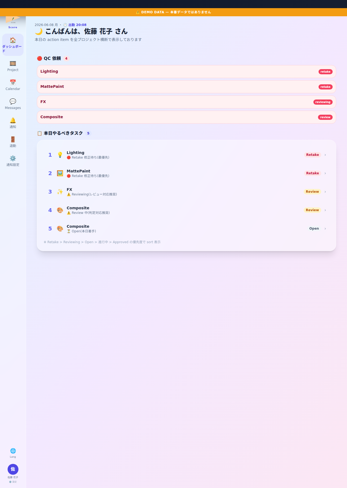
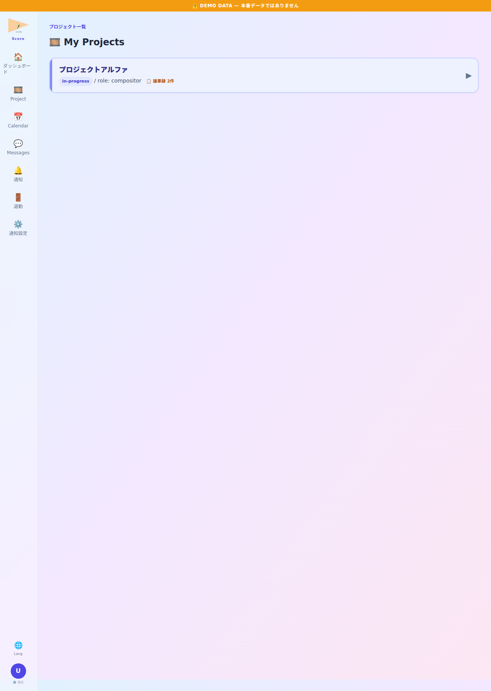
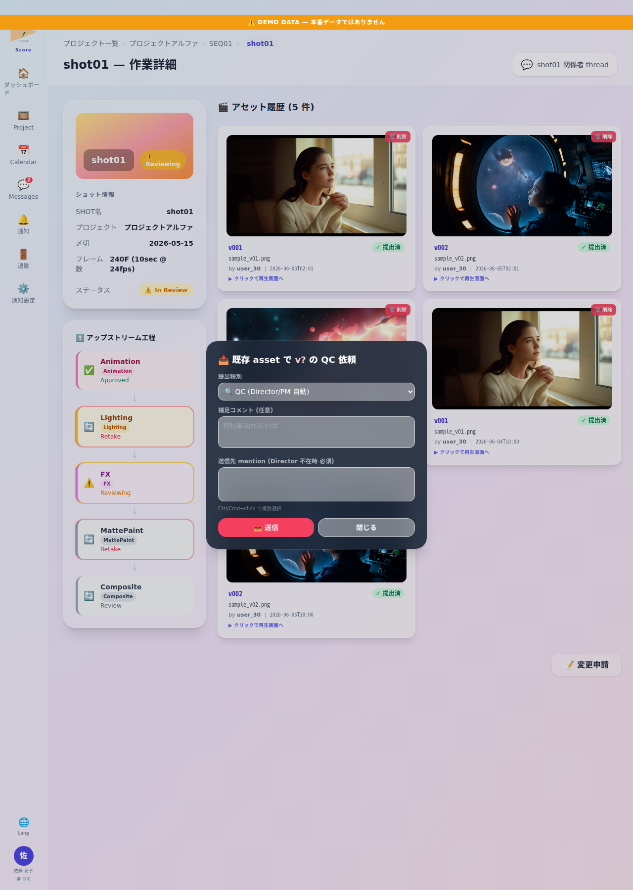
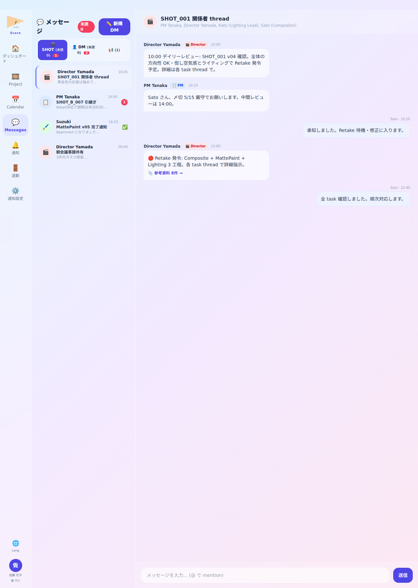
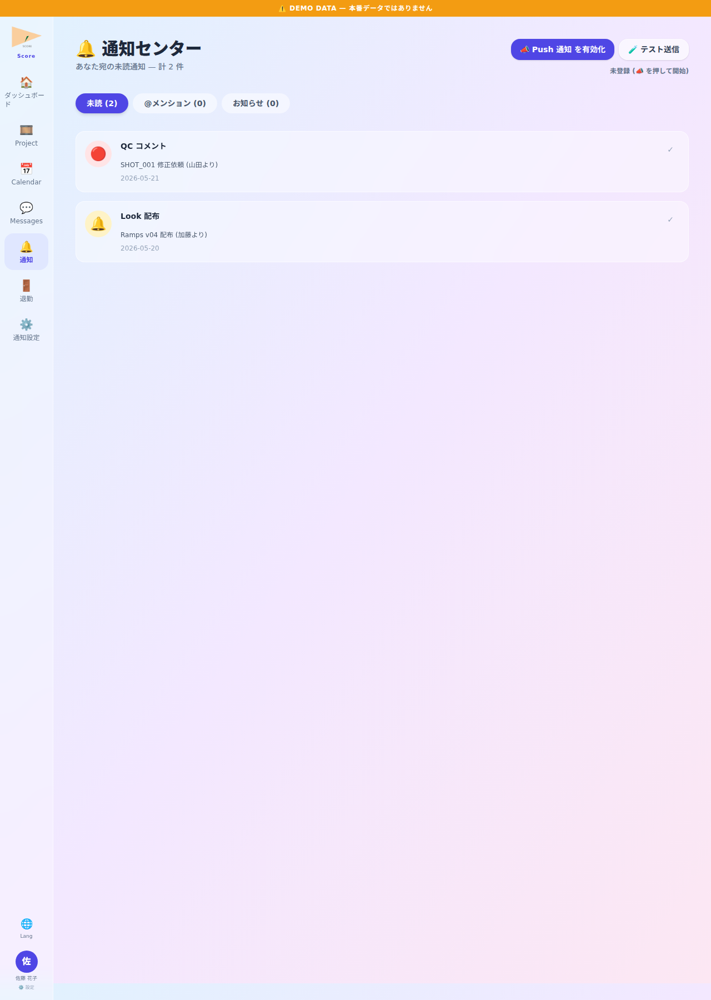
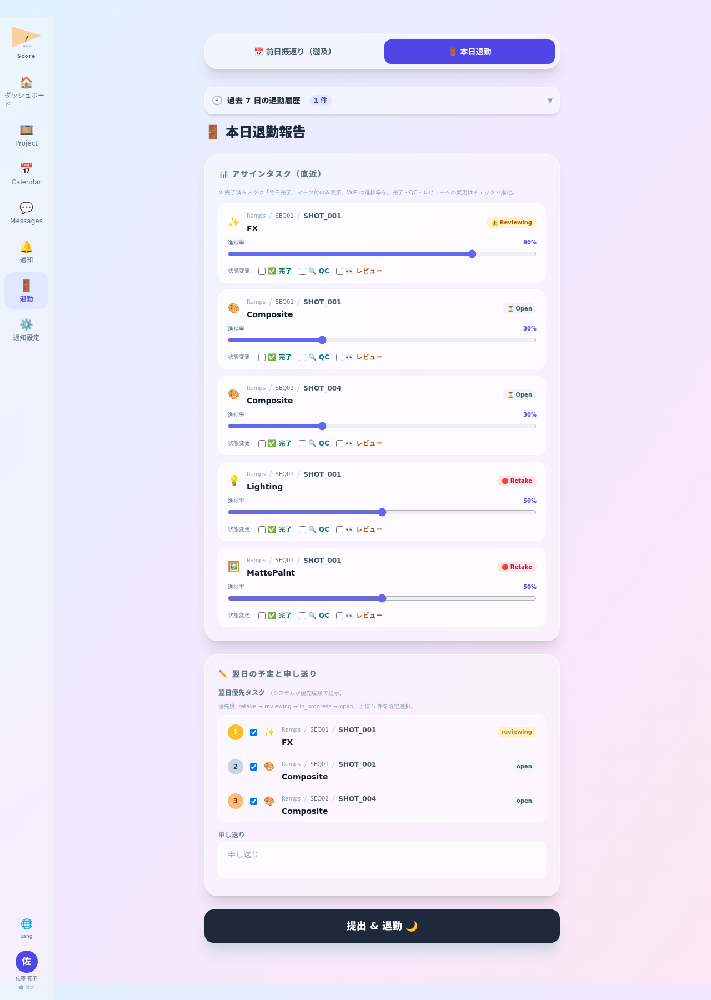

📌 このロールが Score でできること
- ▸担当 SHOT の作業着手・asset upload・部内 Review/QC 依頼提出
- ▸Retake 発令時 リファレンス・マーカー・コメントを /retake_view で一覧確認
- ▸shot_detail で 自分の担当 task と asset version 履歴を一括管理
- ▸SHOT thread で Lead/Director と直接連絡
- ▸退勤報告で 明日の引き継ぎを記録
💡 1 日の流れ — 架空 project「桜咲く街」(TV アニメ・第 3 話 制作中) を例に
佐藤 User は「桜咲く街」担当。朝のルーティン → 担当 SHOT の進捗確認 → asset 作業 → 部内 Review 提出 → Lead OK → Director QC → (Retake あれば) リファレンス確認 → 退勤。
ログイン・朝のルーティン

📸 画面例: 佐藤 User 朝の体調🙂 → 桜咲く街 sq01 c05 v04 着手予定
💬 例えば
例えば 朝 9:30 出勤 → 体調🙂 + 「本日のタスク」 で「sq01 c05 Retake 修正・sq01 c08 todo」 確認 → 提出。 Dashboard に「🕘 出勤 09:30」 が記録されチームに共有される。
Dashboard
📸 画面例: 桜咲く街 sq01 c05 Retake 1 件 + 担当 task 3 件表示
💬 例えば
例えば 紫 card に「🔁 桜咲く街 sq01 c05 Retake 発令 by 山田博」 と表示 → click で /retake_view 遷移 → 具体的な修正方針確認 → 作業開始。 優先度順なので Retake が常に先頭。
プロジェクト一覧

📸 画面例: 桜咲く街 (主) + 別 CM 案件 (副) の 2 プロジェクト表示
💬 例えば
例えば 桜咲く街 (担当 6 SHOT 中 4 完了) + 夏祭り CM (担当 2 SHOT 中 0 完了) と表示。 進捗バーで自分の担当範囲が一目で分かる。
SHOT 詳細・作業画面
📸 画面例: 桜咲く街 sq01 c05 todo → 「→ in-progress」 click → 作業開始
💬 例えば
例えば sq01 c08 を朝着手する時、 task status が「todo」 のままだと PM/Lead が「未着手」 と勘違い。 → 「→ in-progress」 button click で status 自動更新 → 全員に「佐藤さん着手中」 と即共有される。
QC 依頼提出

📸 画面例: 桜咲く街 sq01 c05 v04 → 加藤 Lead に部内 Review 依頼 → OK → 山田 Director に QC 依頼
💬 例えば
例えば 完成 v04 を「📌 Review (部内)」 で加藤 Lead に提出 → OK 確認後 → 同じ asset を「🔍 QC (Director 判定)」 で再提出。 2 段階通すことで「部内 OK 済」 が Director に明確に伝わる。
Retake 確認 page (/retake_view)

📸 画面例: 桜咲く街 sq01 c05 Retake 確認 → 桜花ピンク 10% 強化方針 把握 → 修正着手
💬 例えば
例えば Retake 通知 click → /retake_view 開く → 「🎯 対象 sq01 c05 v04」 video 再生中に「⏱️ 0:12 桜並木」 button click で該当箇所に即シーク → コメント「ピンク 10% 強化」 を確認 → 参考画像 inline 表示 → 修正方針が完全に明確に。
メッセージ・SHOT thread

📸 画面例: 桜咲く街 sq01 c05 thread で加藤 Lead に light 質問
💬 例えば
例えば「light の影色が分からない」 と困ったら sq01 c05 thread で 加藤 Lead に質問 → 「H=210° (青み) でお願い」 と即返信 → 過去の問答が thread に残るので、 同じ問題が他 SHOT で起きた時に検索できる。
通知センター

📸 画面例: 山田 Director Approve 通知 → 桜咲く街 sq01 c05 完了
💬 例えば
例えば 集中作業中に山田 Director から Approve が出ると、 Push toast「✅ sq01 c05 Approved」 が右下にスッと表示 → 作業の手を止めずに完了を確認 → 次の SHOT へスムーズに移行。
退勤報告

📸 画面例: 佐藤 User「sq01 c05 v04 提出済・明日は sq02 c01 着手」 提出
💬 例えば
例えば「本日: sq01 c05 v04 QC 提出済・明日: sq02 c01 着手予定・blocker: 加藤 Lead から light rig 待ち (sq02)」 と記入。 加藤 Lead が翌朝即気付き、 朝一で light rig 提供 → 待ち時間ゼロで着手可能。